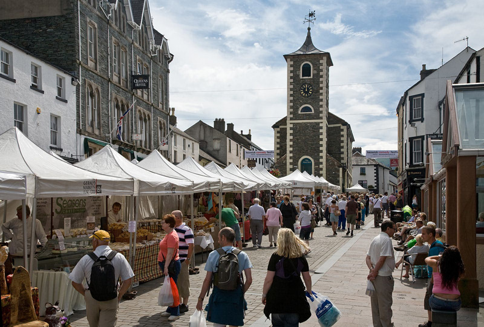
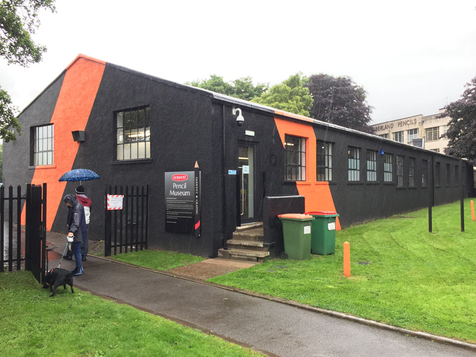

Keswick Market - Regularly run for over 700 years.
By User:Diliff - Own work, CC BY-SA 3.0, https://commons.wikimedia.org/w/index.php?curid=7213448
Derwent Pencil Museum
By Andrew Abbott, CC BY-SA 2.0, https://commons.wikimedia.org/w/index.php?curid=64810865